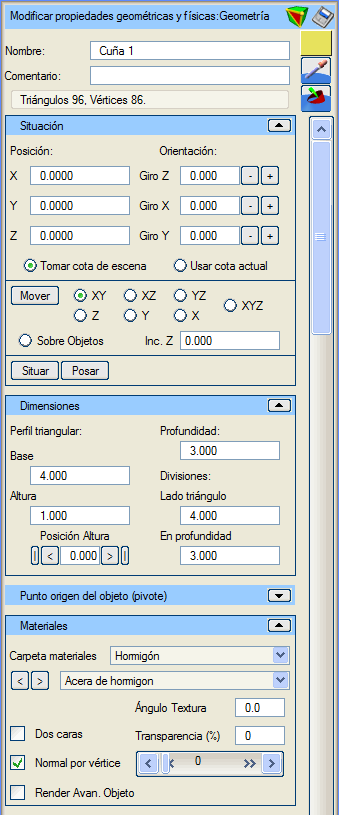
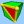
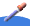
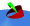
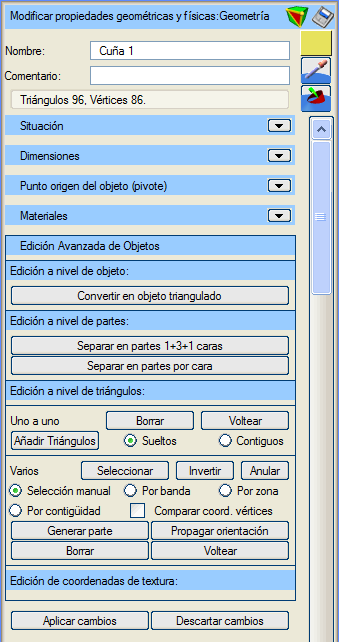
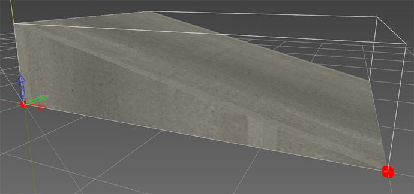

| |
|
Üçgen Prizma
|
|
Genel Bilgiler Bu menüde, daha önce oluşturulmuş bir üçgen prizmanın tüm özellikleri ayarlanabilir. Seçenekler İsim: üçgen prizmayı bir isimle tanımlamayı sağlar. Yorum: bu üçgen prizma nesnesine açıklayıcı bir yorum eklemeyi sağlar.  Üçgen prizma nesnesinin "Gelişmiş Düzenleme" moduna girer.  Üçgen prizma nesnesini çeşitli formatlarda kaydetmeyi sağlar. Üçgen prizma nesnesini çeşitli formatlarda kaydetmeyi sağlar. Ardından 3B görüntüleyicide seçilecek pikselin rengini nesneye atar.  Ardından 3B görüntüleyicide seçilecek malzemenin özelliklerini nesneye atar. Renk: Renk butonu (bu örnekte turuncu) aracılığıyla üçgen prizma için bir renk belirtilebilir. Üçgenler ve Köşe Noktaları: üçgen prizmanın üçgen ve köşe noktası sayısını bildirir. Konum (X, Y, Z): üçgen prizmanın tam konumunu belirtir. Yönelim (X dönüşü, Y dönüşü, Z dönüşü): üçgen prizmanın her bir eksen etrafındaki dönüşünü belirtir. Dönüşler Z->X->Y sırasında uygulanır. Z ekseni etrafındaki dönüş (azimut, heading) -400º ile 400º arasında değerler alır. X ekseni etrafındaki dönüş (pitch) -360º ile 360º arasında değerler alır. Y ekseni etrafındaki dönüş (roll) -360º ile 360º arasında değerler alır. Sahneden Kot Al: üçgen prizmayı 3B görüntüleyicide taşırken veya yerleştirirken, üçgen prizmanın sahnedeki nesnelerin üzerine oturmasını sağlar. Mevcut Kotu Kullan: üçgen prizmayı 3B görüntüleyicide taşırken veya yerleştirirken, konuma Istram'ın "Mevcut Kotu"na karşılık gelen kot atanır. Taşı (XY, XZ, YZ, X, Y, Z, XYZ, Nesneler Üzerinde): bir üçgen prizmayı 3B ortamda imleç ile sürükleyerek taşımayı sağlayan "taşıma" modunu etkinleştirir. Üçgen prizmanın taşınmak istendiği düzlemler kısıtlanabilir. "Nesneler Üzerinde" modu, üçgen prizmayı imlecin hareket ettiği nesnenin yüzeyine yerleştirir. Taşıma modundan "Esc" tuşuna basarak veya bu butona tekrar tıklayarak çıkılır. Z Artımı: üçgen prizmanın yerleştirildiği kota eklenecek bir mesafe tanımlar. Yerleştir: bir üçgen prizmayı imleç ile seçilen belirli bir noktaya yerleştirmeyi sağlar. Yüzeye Oturt: sınırlayıcı kutunun altındaki "zemine" en iyi şekilde uyum sağlaması için üçgen prizmanın dönüş açılarını yapılandırır. Üçgen Profil: üçgen prizmanın ana hatlarını belirleyen üçgenin tam boyutlarını belirtmeyi sağlar. Üçgenin taban, yükseklik ve yüksekliğin konumu (tabanın yüzdesi olarak, %0 solda, %100 sağda) belirtilir. Derinlik: üçgen prizmanın, profilini oluşturan üçgene dik yöndeki boyutunu belirtir. Bölüntüler (Üçgen Kenarı, Derinlikte): üçgen prizmanın daha gerçekçi bir geometriye ve aydınlatmaya sahip olmasını sağlamak için yüzeyini ızgaralara bölmek için kullanılır. Pivot seçenekleri, üçgen prizmanın hangi noktasının konum koordinatlarına yerleştirileceğini belirtir. Bu nokta şunlar olabilir: -Sınırlayıcı kutunun taban merkezi. -Sınırlayıcı kutunun merkezi (varsayılan seçenek). -Sınırlayıcı kutunun minimum koordinatları. -Minimum koordinatlara göre göreli pivot (X, Y, Z). Sınırlayıcı kutunun minimum koordinatları olarak sol alt köşe alınır. Kullanıcı tanımlı bir pivot belirtilirken, bu işlem sınırlayıcı kutunun köşesine göre göreli öteleme koordinatları (X, Y, Z) girilerek veya nesne üzerine tıklanarak yapılabilir. Bu durumda, ya "Pivotu taşı, geometriyi koru" seçeneği işaretlenerek pivot taşınabilir ya da "Minimum koordinatları taşı, pivotu koru" seçeneği ile geometrinin iç koordinatları değiştirilerek geometri taşınabilir. Malzeme Klasörü: üçgen prizmaya atanacak malzemelerin aranacağı sınıflandırma klasörünü seçmeyi sağlar. Seçilen klasöre bağlı olarak aşağıdaki malzeme seçici doldurulur. Malzeme Seçici: üçgen prizmaya uygulanacak malzemeyi seçmeyi sağlar. "<" ve ">" butonları, seçilen klasördeki malzeme listesinde sırayla gezinmeyi sağlar. Doku Açısı: seçilen malzeme bir doku içeriyorsa, dokunun uygulama düzlemi üzerindeki yönelimi değiştirilebilir. Varsayılan değer 0.0º'dir. Çift Yüzeyli: bu kutucuk işaretlendiğinde, üçgen prizmanın üçgenlerinin her iki yüzeyinin de boyanacağı belirtilir. Bu, yalnızca kamera üçgen prizmanın içine yerleştirilecekse kullanışlıdır. Üçgenleri çift yüzeyli boyamak zaman maliyetini artırır. Varsayılan olarak işaretli değildir. Şeffaflık (%): üçgen prizmanın şeffaflık yüzdesini belirtir. Varsayılan olarak şeffaflık %0'dır, yani opaktır. Bu değer, altındaki yatay kaydırıcı ile de kontrol edilir. Köşe Başına Normal: bu kutucuk işaretlendiğinde, nesnenin her bir köşe noktasında hesaplanmış bir normal vektörü olduğu belirtilir; aksi takdirde her üçgen için bir normal vektör hesaplandığı kabul edilir. Bu nesne için fark etmez, çünkü yüzeyler köşe noktalarını paylaşmaz. Varsayılan olarak işaretlidir. Nesnenin Gelişmiş Render'ı: bu seçenekle, üçgen prizmanın oluşturulmasında alışılmış OpenGL fonksiyonları yerine "shader"ların kullanılması belirtilir. Bu seçeneğin doğru çalışması, grafik donanımının bu "shader"ların kullanımını desteklemesine bağlıdır. Varsayılan olarak işaretli değildir. Gelişmiş Düzenleme  Burada, üçgen prizmaların gelişmiş düzenlemesine ait özel seçenekler veya özellikler açıklanmaktadır. Nesne seviyesinde, tüm üçgen prizmayı etkileyen eylemler gerçekleştirilir. Üçgenlenmiş Nesneye Dönüştür: üçgen prizmayı normal bir 3B nesneye dönüştürür, artık bir üçgen prizma olarak değil, onu tanımlayan üçgenler bütünü olarak kabul edilir; diğer özellikler korunur. Özellikler menüsü, bir 3B nesne menüsüne dönüşür. Parça seviyesinde, üçgen prizmanın parçalarını etkileyen eylemler gerçekleştirilir. Parçalara Ayır: üçgen prizmayı normal bir 3B nesneye dönüştürür, artık bir üçgen prizma olarak değil, onu tanımlayan üçgenler bütünü olarak kabul edilir, ancak bu üçgenler basılan butona göre nesne parçaları olarak gruplandırılır; diğer özellikler korunur. Özellikler menüsü, bir 3B nesne menüsüne dönüşür. 1+3+1 Yüze Göre Parçalara Ayır: üçgen prizmayı 3 parçaya böler; her bir yanal üçgen için bir parça ve dikdörtgen yüzeyler için bir başka parça. Yüze Göre Parçalara Ayır: üçgen prizmayı her yüzey için bir parça olmak üzere toplam 5 parçaya böler. Üçgen seviyesinde, üçgen prizmanın üçgenleriyle ilgili eylemler gerçekleştirilir. Üçgenleri oluşturan, silen veya yeniden düzenleyen herhangi bir eylem, üçgen prizma nesnesinin bu özelliğini kaybetmesine ve bir 3B nesne haline gelmesine neden olur. Özellikler menüsü de buna uygun olarak değişir. Bir nesnenin üçgen prizma olması, programın ve dolayısıyla kullanıcının, bu nesnenin bir üçgen prizma olduğu gerçeğini dikkate alarak çalışmasına ve özelliklerini değiştirmesine olanak tanır: doku kaplama, yüzey bölüntüleri ve aydınlatma, bir üçgen prizma olmasına uygun şekilde ele alınır. 
Resimde, menü görselinde tanımlanan üçgen prizma gösterilmektedir. |